Generating true random numbers from subatomic particles, for use in generative and algorithmic art.
Concept
As an algorithmic artist, I use 'randomness' to make choices about shape, colour, size and more. Usually this means using a pseudorandom number generator, which takes a seed (like the time or a blockchain transaction ID) and scrambles it through an algorithm to get a random seeming result.
Here are two of my artworks, created with the same algorithm but different random seeds:
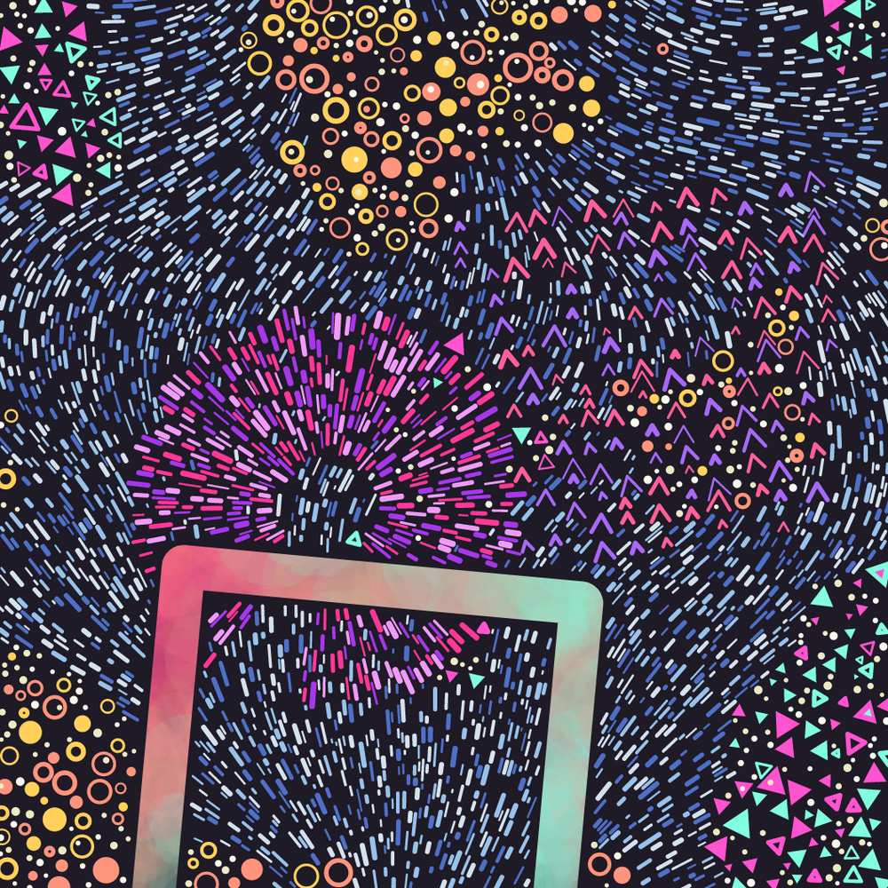
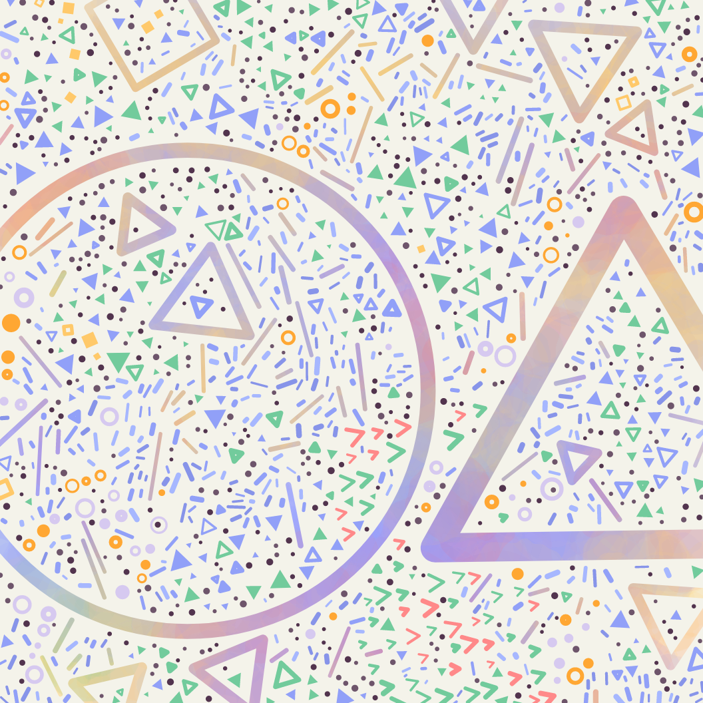
True random numbers can be produced from unpredictable natural processes like radioactive decay, radio static from weather patterns or even the motion in a lava lamp.
I've built a muon detector as a source for randomness in my artwork.
Muons are subatomic particles that form in the upper atmosphere, when cosmic rays from space collide with air particles at high energy. Around 10,000 muons arrive on each square metre of the Earth's surface every minute. There's no pattern to their arrivals, so I'm using the time gaps between detections as my random source.
How it works
My detectors are made using Geiger-Müller tubes, which can detect a number of different particles of ionizing radiation, including muons.
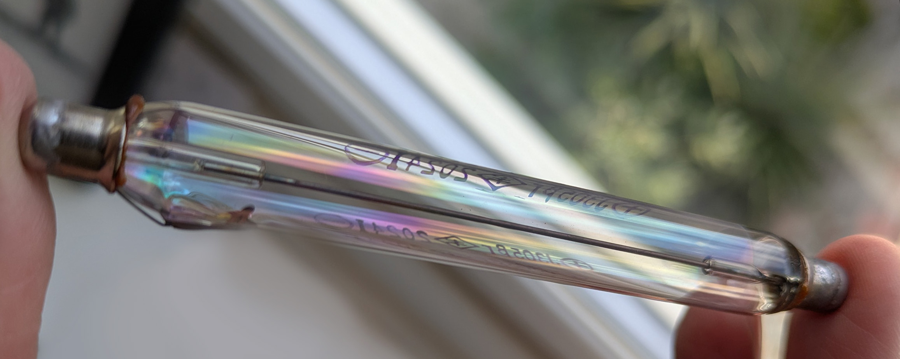
Most particles are not energetic enough to pass through both tubes, but muons have high energy. By positioning two tubes on top of one another, and looking for times they both trigger more or less at the same time, we can identify muons.
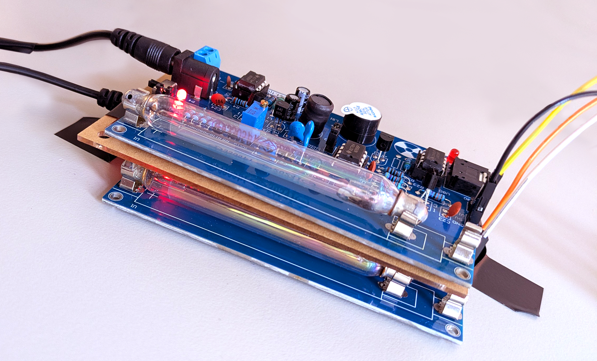
The boards that hold the Geiger-Müller tubes are attached to NodeMCU boards (similar to Arduino). When the GM tubes detect radiation, they produce a brief electrical pulse, which the NodeMCU board listens for, sending a timestamped message over USB when one fires.
I created a browser app which connects to the NodeMCU boards over the Web Serial API and picks up these messages. The detections for each tube are displayed individually, showing as white lines on the timelines below. When a pair of tubes fire within 50ms of each other (allowing for delays in the hardware), it counts as a coincidence. A muon has been detected and this is displayed as a blue line covering the pair of timelines.
I have built 3 muon detectors, using 6 Geiger-Müller tubes, to increase the number of detections.
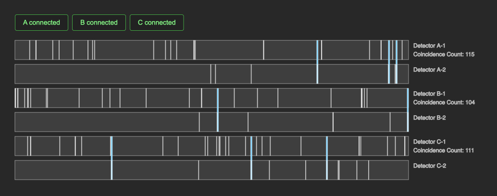
Random numbers are generated every time a muon is detected. The time interval between the current detection and the last one, in milliseconds, is taken modulo 500 and then mapped to a 0-1 range.
In the following image, each dot was generated as a muon was detected. The y-position of the dot was chosen using a standard pseudorandom number generator and the x-position was chosen using my muon-powered true random generator.
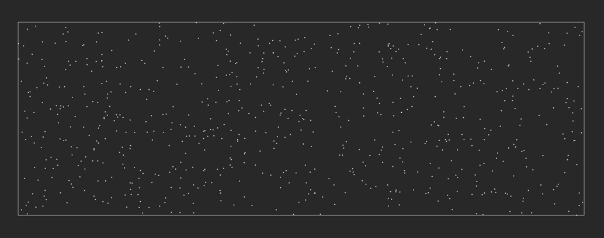
Build
I have been working on a housing for the three detectors. My initial design is made out of wood and has worked well for testing and keeping the Geiger-Müller tubes in place.
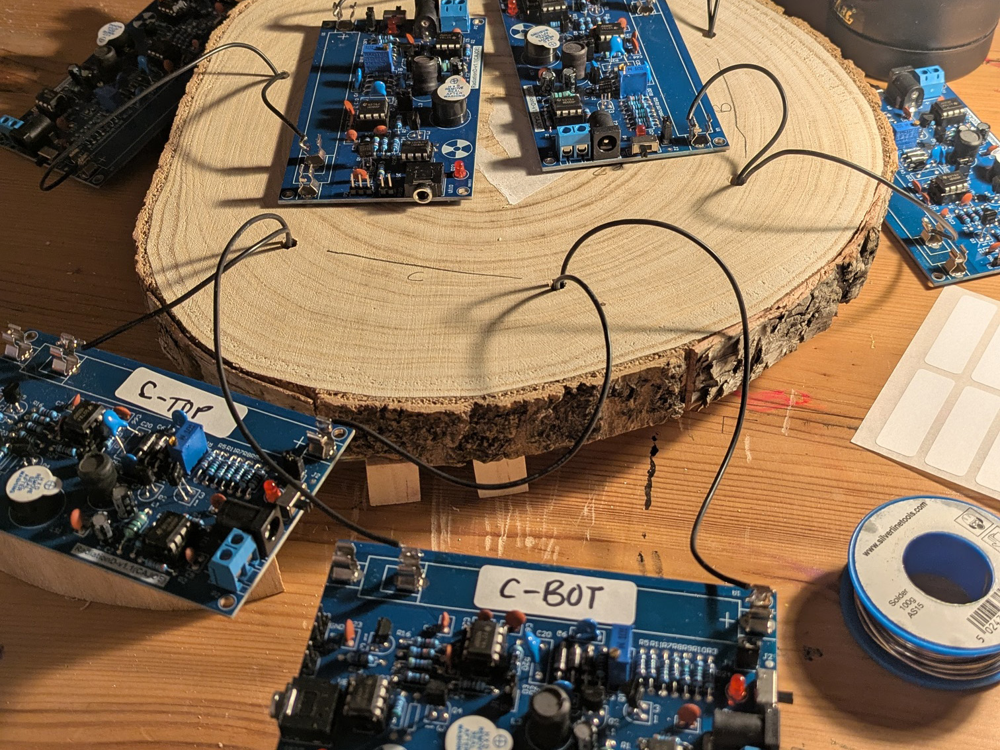
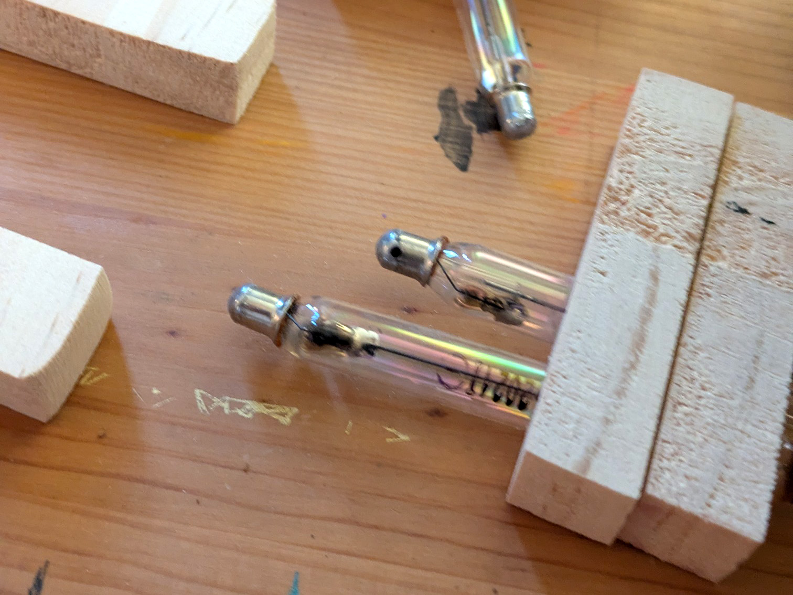
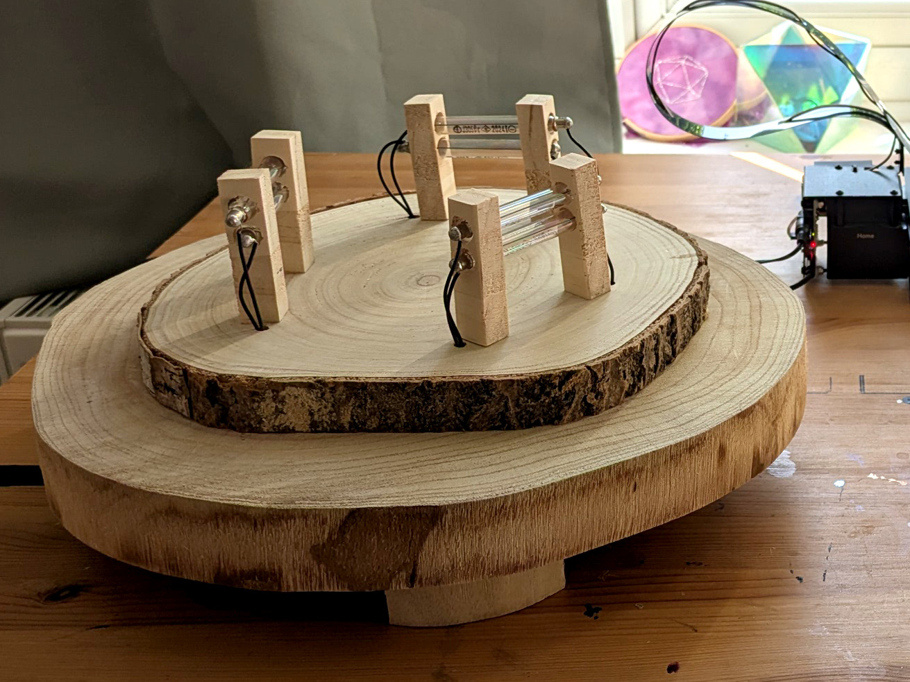
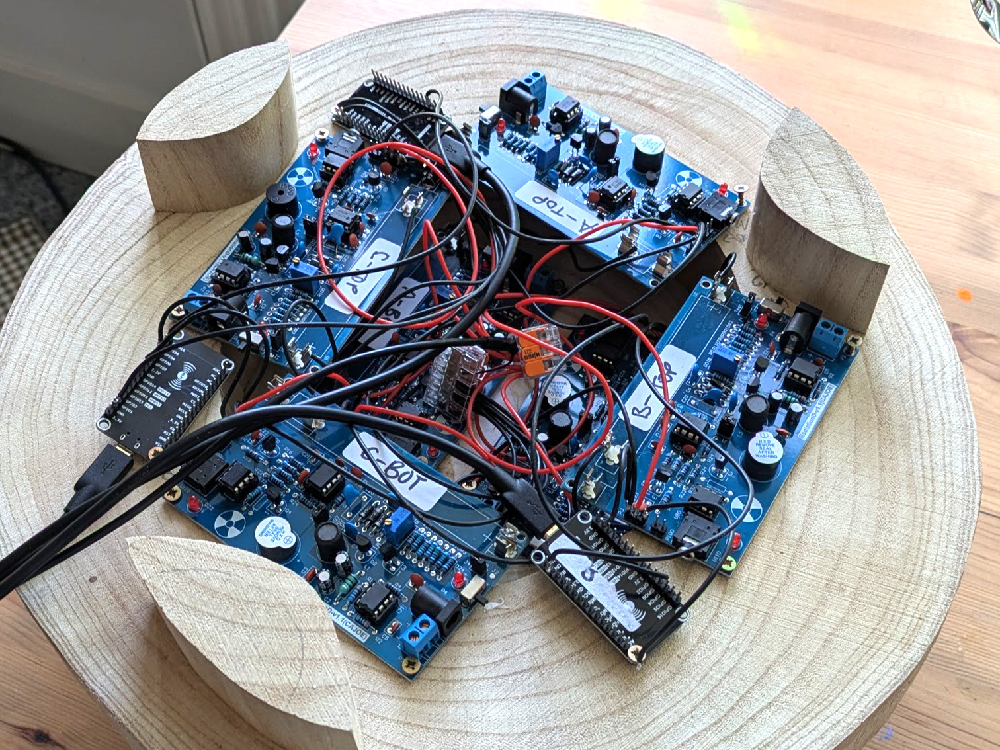
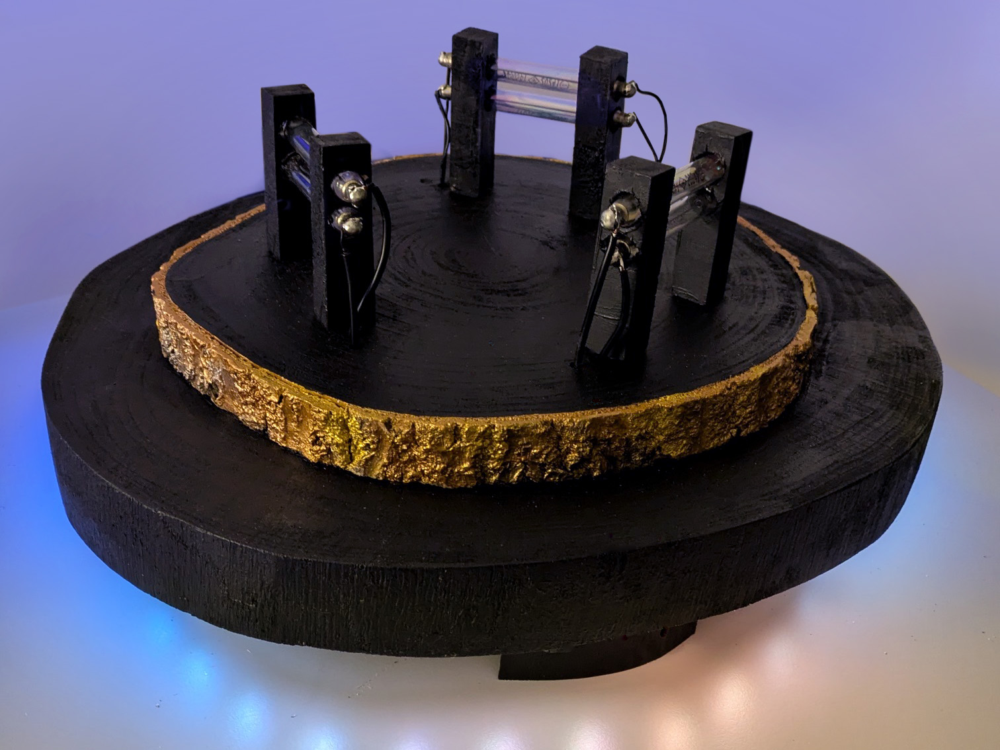
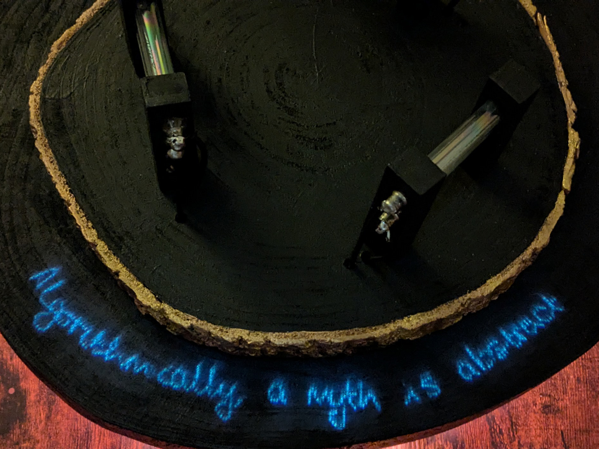
Ongoing
I've been using the random numbers with my sentence generation system, and projecting the results directly onto the muon detector housing. I'm still developing the aesthetics and experience of this.
The muon detector generates random numbers slowly - only a few a minute. This means it takes some time for a sentence to build up. One random number chooses the sentence structure, and then each number after that chooses a word from my word lists. This naturally creates a slow burn experience, where the meaning slowly unfolds.
I'm keen to explore the conceptual difference between using pseudorandom numbers and true random numbers (particularly when they are coming from outer space!) Ultimately, I'm interested in the fundamental question of what is truly random and what is just difficult to predict.